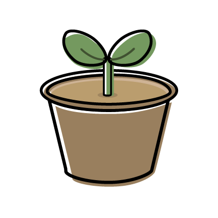

About

浦橋慧子

短期大学卒業後、保育園に12年勤めました。 新しいスキルを身につけたいと決意し、退職後は以前から興味のあったWEBデザインについて学び始めました。 幼少期から絵を描くこと、工作、手芸など、物づくりが好きです。
できること
デザイン
- Illustrator
- Photoshop
- Figma
コーディング
- Visual Studio Code
- HTML , CSS
- javascript
すきなこと
- 犬
- イラスト制作
- 
- 園芸
犬と一緒にお出かけするのが週末の楽しみです。
このWEBサイトで使用しているイラストは全てIllustratorで自主制作しました。
天気の良い日には庭の手入れをするのが癒しの時間です。